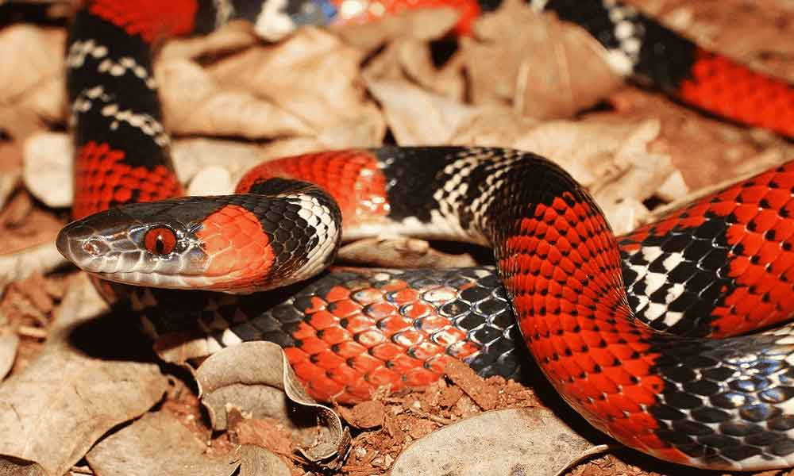

<!DOCTYPE html>
<html lang="pt-br">
<head>

    <meta charset="UTF-8">
    <meta http-equiv="X-UA-Compatible" content="IE=edge">
    <meta name="viewport" content="width=device-width, initial-scale=1.0">
    <link rel="stylesheet" href="/styles/style.css">
    <link rel="stylesheet" href="styles/scrollbar.css">
    
    <link href="https://cdn.jsdelivr.net/npm/bootstrap@5.3.0/dist/css/bootstrap.min.css" rel="stylesheet" integrity="sha384-9ndCyUaIbzAi2FUVXJi0CjmCapSmO7SnpJef0486qhLnuZ2cdeRhO02iuK6FUUVM" crossorigin="anonymous">
    <link rel="icon" type="image/png" href="src/assets/img/logo.png">
    <title>Avistei - Micurus</title>
</head>

<body style="background-image: url('src/assets/img/topside.png'); background-repeat: no-repeat; background-size: cover; background-attachment: fixed; position: relative;">
    <div id="app"></div>
    <script src="https://cdn.jsdelivr.net/npm/bootstrap@5.3.0/dist/js/bootstrap.bundle.min.js" integrity="sha384-geWF76RCwLtnZ8qwWowPQNguL3RmwHVBC9FhGdlKrxdiJJigb/j/68SIy3Te4Bkz" crossorigin="anonymous"></script>
    <script src="https://cdn.jsdelivr.net/npm/vue@2.7.9"></script>
    <script>
        new Vue({
            el: '#app',
        template: `
        <div class="container">

            <!-- Navbar -->
<div style="padding-bottom: 5%;">
 <nav class="d-flex align-items-center justify-content">
     
     
     <a href="animals.html" class="d-flex flex-column align-items-center">
         
         <span>Animais</span>
     </a>
     
     <a href="about.html" class="d-flex flex-column align-items-center">
         
         <span>Projeto</span>
     </a>
     
     <a href="health.html" class="d-flex flex-column align-items-center">
         
         <span>Saúde</span>
     </a>
 </nav> 
</div>


<div class="row">

<!-- Buttons / Content -->
 <div class="col-sm-5">
   <div class="text-container">
     <h3>Coral Verdadeira<i>(Micrurus altirostris)</i></h3>
     <p>
       A coral-verdadeira é muito conhecida pela população brasileira, e tem um padrão de cores característico: sua pele é desenhada por listras que intercalam preto, vermelho e branco. A coloração não é à toa: seu objetivo é sinalizar aos predadores já de cara que ela é bem perigosa – na natureza, esse tipo de recurso se chama coloração de advertência.
     <br><br>
       Considerada uma das serpentes mais venenosas do território brasileiro, a coral-verdadeira tem um veneno de alta toxicidade que afeta diretamente o sistema nervoso. Se uma pessoa é picada, os primeiros sintomas são dormência no local, visão turva e dificuldade na fala. Porém, aos poucos, a peçonha começa a afetar o restante do sistema nervoso, provocando paralisia de músculos importantes, como coração e diafragma.
     <br><br>
       Apesar de representar todo esse perigo, a coral-verdadeira é muito tímida e vive geralmente escondida entre a vegetação rasteira, buracos no chão e debaixo de pedras. Além disso é um animal tranquilo, que em raras ocasiões ataca. A coral-verdadeira  também tem diversas sósias, as corais-falsas. Essas serpentes, que não são perigosas, mimetizam as características físicas das corais-verdadeiras para afastar possíveis predadores. 
     </p>
<p>
 <button class="btn btn-success" type="button" data-bs-toggle="collapse" data-bs-target="#collapseWidthExample" aria-expanded="false" aria-controls="collapseWidthExample">
   Sobre o animal
 </button>
 <button class="btn btn-danger" type="button" data-bs-toggle="collapse" data-bs-target="#collapseWidthExample2" aria-expanded="false" aria-controls="collapseWidthExample2">
   Sofri um acidente
 </button>
</p>


<div style="min-height: 120px;">
 
 <div class="collapse collapse-horizontal" id="collapseWidthExample">
   <div class="card card-body-lg" style="max-width: 600px; width: 600px;word-break: break-word;">
<ul>
 <li>Micrurus altirostris</li>
 <li>As corais-verdadeiras são serpentes de tamanho médio, variando geralmente de 60 a 150 centímetros de comprimento, dependendo da espécie.</li>
 <li>A coloração geral da Micrurus altirostris é composta por anéis de cores vivas e contrastantes. Ela possui um padrão característico de anéis pretos e vermelhos, com a barriga predominantemente preta.</li>
 <li>Assim como outras corais-verdadeiras, a Micrurus altirostris tem uma cabeça triangular em relação ao corpo. No entanto, essa espécie se destaca por ter um focinho alto e distintivo, que é uma característica marcante.</li>
 <li>A Micrurus altirostris é encontrada principalmente em áreas de cerrado, matas secas e áreas rochosas do Brasil, como no Cerrado, na Caatinga e na região do Pantanal.</li>
 <li>Essas serpentes preferem habitats terrestres, mas também podem ser encontradas em árvores e arbustos.</li>
 <li>A Micrurus altirostris é considerada altamente venenosa.</li>
 <li>Seu veneno contém neurotoxinas que afetam o sistema nervoso, podendo causar paralisia muscular e, em casos extremos, levar à morte.</li>
</ul>
   </div>
 </div>

 <div class="collapse collapse-horizontal" id="collapseWidthExample2">
   <div class="card card-body-lg" style="max-width: 600px; width: 600px;word-break: break-word;">
<ol>
 <li>Mantenha a calma: É essencial manter a calma para evitar o aumento da circulação sanguínea, o que pode espalhar o veneno mais rapidamente pelo corpo.</li>
 <li>Busque ajuda médica: Entre em contato com os serviços de emergência ou vá para o hospital mais próximo imediatamente. Informe-os sobre a picada de cobra e siga as orientações que eles fornecerem.</li>
 <li>Imobilize o membro afetado: Se possível, imobilize o membro afetado pela picada, evitando movimentação excessiva. Isso ajudará a reduzir a disseminação do veneno pelo corpo.</li>
 <li>Mantenha-se em repouso: Evite fazer atividades físicas e mantenha-se em repouso até receber cuidados médicos adequados.</li>
 <li>Não realize métodos tradicionais ou caseiros: Evite aplicar torniquetes, cortes ou sucção no local da picada. Essas práticas não são eficazes e podem causar danos adicionais.</li>
 <li>Observe os sintomas: Esteja atento aos sinais e sintomas que possam surgir, como dor intensa no local da picada, inchaço, formigamento, dificuldade para respirar, tontura, visão turva, náuseas ou vômitos. Essas informações serão valiosas para os profissionais de saúde avaliarem o seu quadro clínico e fornecerem o tratamento adequado.</li>
</ol>
   </div>
 </div>

</div>

<div style="min-height: 120px; overflow-x: visible;">
 
</div>


   </div>
 </div>

<!-- Hero Animal --> 
<div class="col-sm-5">
 <div class="image-container">
   
 </div>
</div>

</div>

<br>
<!-- Comments -->
       <h1>Você avistou um desses? Conte-nos!</h1>
               <hr/>
               
               <div class="form-todo form-group">
                   <p>
                       <input type="text" name="author" placeholder="nome" class="form-control-lg" v-model="name">
                   </p>
                   <p>
                       <textarea name="message" placeholder="comentário" class="form-control-lg" v-model="message"></textarea>
                   </p>
                   
                   <button v-on:click="addComment" type="submit" class="btn btn-success" style="-webkit-box-shadow: 3px 3px 5px 5px #000000; box-shadow: 5px 5px 15px 5px #000000;">Comentar</button>
               </div>
               <br>
               
               <div class="list-group">
                   <div class="list-group-item" v-for="(comment, index) in allComments">
                       <span class="comment__author">Autor: <strong>{{ comment.name }}</strong></span>
                       <p>{{ comment.message }}</p>
                       <div>
                           <p><a href="#" title="Excluir" v-on:click.prevent="deleteComment(index)">Excluir</a></p>
                       </div>
                   </div>
               </div>
               
               <hr/>
</div>  `,
        data() {
            return {
                comments: [],
                name:'', message: '',
            }
        },
        methods: {
            addComment() {
                if(this.message.trim() === ''){return;}
                this.comments.push({name: this.name, message:this.message});
                this.name ='';
                this.message = '';
            },

            deleteComment(index) {this.comments.splice(index, 1)},
            getImage() {return 'trip.jpg'}
            
        },
        computed:{
            allComments(){
                return this.comments.map(comment => ({
                  ...comment,
                   name: comment.name.trim() === '' ? 'Anônimo' : comment.name
                }))
            }
        },
        watch:{
            comments(val) {
                console.log('val', val);
            }
        }
    });
</script>

    </body>
</html>

